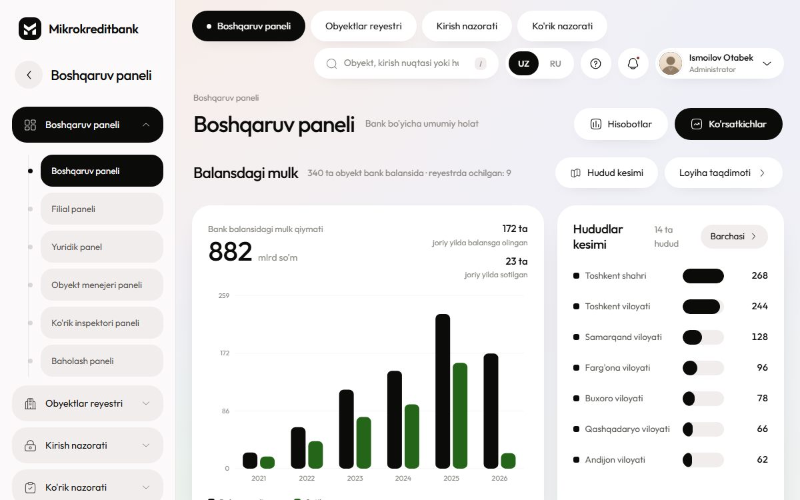
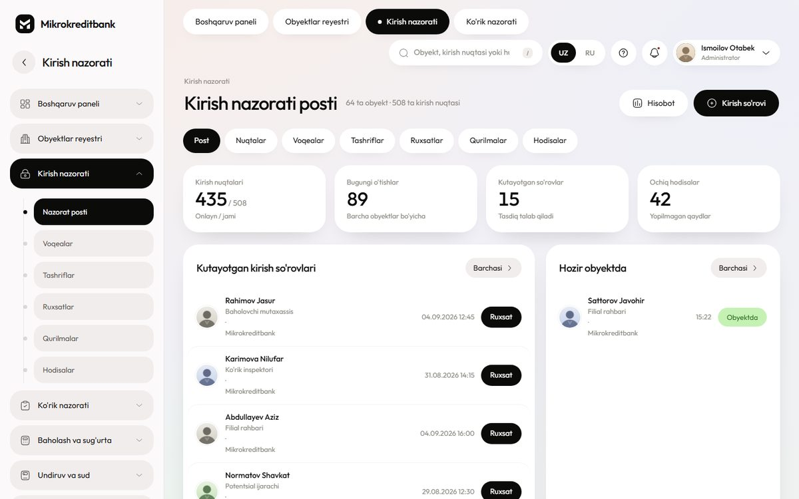
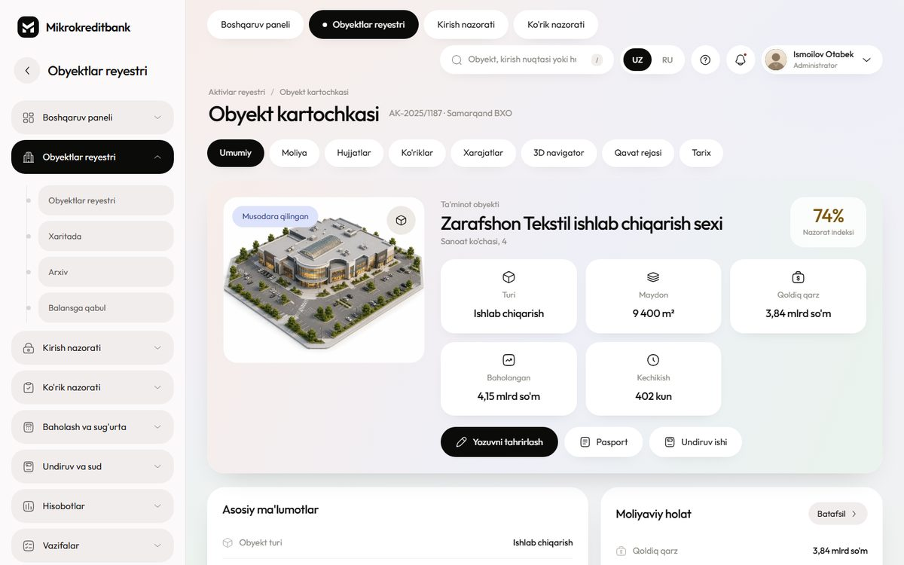
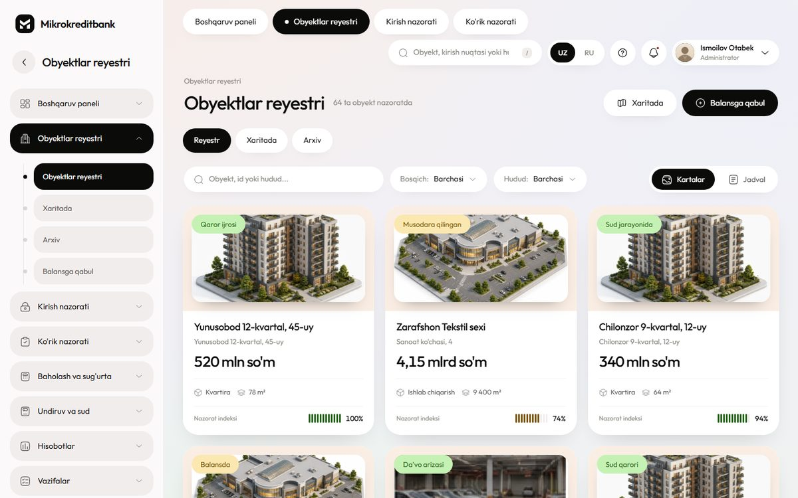

Bank balansiga o'tgan har bir bino, texnika va uskuna yagona reyestrda. Elektr ta'minotisiz ishlaydigan qo'riqlash va sotuvgacha uzluksiz nazorat.
Mulk balansga olingan kundan sotilgunga qadar oylar, ba'zan yillar o'tadi. Bu vaqt ichida u bo'sh turadi, qiymatini yo'qotadi va xarajat talab qiladi. Ammo bu jarayonni bir joydan kuzatish imkoni yo'q.
Har oy hududlardan surat va jadvallar yig'ilib, yuzlab slaydli taqdimot tuziladi. Tayyor bo'lgunicha ma'lumot eskirib ulguradi.
Balansga o'tayotganda hisoblagichlar nollanadi, elektr, gaz va suv uziladi. Bino qorovul yoki qulf ixtiyorida qoladi; kim kirib-chiqqani hech qayerda qayd etilmaydi.
Qo'riqlash, mol-mulk solig'i, sug'urta va ta'mirlash xarajatlari turli bo'linmalarda yuritiladi. Bitta obyektni saqlash bankka oyiga qanchaga tushishini bir joyda ko'rib bo'lmaydi.
O'g'irlik, yong'in, tomdan suv o'tishi, begona shaxslarning joylashib olishi. Har bir hodisa mulk bahosini tushiradi va E-auksiondagi savdoni kechiktiradi.
Taqdimotdagi raqamlar shartli namoyish ma'lumotlaridan olingan. Haqiqiy ko'rsatkichlarni 6-bo'limdagi kalkulyatorga kiritish mumkin — ular faqat shu kompyuterda saqlanadi.
Qatlamlar bir-biriga bog'lanib qolmagan: jihoz yetkazib beruvchi almashsa ham tizim va ma'lumotlar bankda qoladi. Tafsilotini ko'rish uchun qatlamni bosing.
Beshta yo'l bor. Ular bir-birini istisno qilmaydi: obyektning qiymati va balansda turish muddatiga qarab birga qo'llanadi.
Obyektga elektr olib kirilmaydi. Jihoz quyosh energiyasida ishlaydi, aloqa 4G orqali, datchiklar o'z batareyasida. Qimmat obyektga to'liq to'plam, arzoniga ixcham to'plam qo'yiladi.
Obyektga qo'yiladigan jihozlarni tanlang. Hisob eng og'ir davr, ya'ni qish uchun, bulutli kunlar zaxirasi bilan bajariladi.
Hisob usuli: sutkalik iste'mol = yuklama × 24 soat; panel = iste'mol ÷ (quyoshli soatlar × 0,70 tizim samaradorligi); akkumulyator = iste'mol × zaxira kunlari ÷ 0,80 ruxsat etilgan razryad. O'zbekiston uchun dekabrda optimal qiyalikdagi panelda o'rtacha 2,5–3 quyoshli soat olinadi. Yakuniy loyiha obyektning aniq joylashuvi bo'yicha tekshiriladi.
Yuz terminali doimiy quvvat talab qiladi. Shuning uchun u faqat quyosh stansiyasi bor A darajali obyektlarga qo'yiladi. Qolgan barcha obyektlarda yuzni tanish xodimning telefonida bajariladi.
Xodim mobil ilovada yuzini ko'rsatadi. Tiriklik tekshiruvi surat yoki video bilan aldashga yo'l qo'ymaydi.
Ilova xodim haqiqatan obyekt hududida turganini tekshiradi. 100 metrdan uzoqda kirish qayd etilmaydi.
Eshikdagi passiv NFC plomba telefon bilan o'qiladi. Plomba quvvat talab qilmaydi; uzilsa yoki almashtirilsa, tizim buni darhol aniqlaydi.
Kim, qachon, nima maqsadda va qancha vaqt bo'lgani avtomatik yoziladi. Ko'rik dalolatnomasi shu yerdan boshlanadi.
Tutun va issiqlik datchiklari o'z batareyasida 5–10 yil ishlaydi va signalni radio orqali markazga uzatadi. Kabel ham, elektr ham kerak emas.
Simsiz markaz bor-yo'g'i 2–5 Vt iste'mol qiladi va kichik quyosh paneli yoki kamera akkumulyatoridan oziqlanadi. Ichki batareyasi 15 soatgacha zaxira beradi.
Elektromagnit qulf tinimsiz 5–6 Vt iste'mol qiladi va avtonom obyektga mos emas. Motorli yoki elektromexanik qulf faqat ochilish paytida quvvat oladi.
Har bir obyektga bir xil to'plam qo'yish shart emas. Qiymatga qarab to'rt daraja; narxlar va obyektlar sonini shu yerning o'zida o'zgartirishingiz mumkin.
Narxlar — 2026-yil sentabr holatiga ochiq bozor manbalaridan olingan yo'naltiruvchi qiymatlar (AQSH dollarida, montajsiz); yakuniy smeta tanlov asosida aniqlanadi. Oylik xarajatga SIM-kartalar, platforma xizmati, rejali texnik xizmat va qo'riqlash xizmatining tezkor guruhi obunasi kiradi. «Hozirgi tartib» faqat qorovul qo'yilgan obyektlar bo'yicha hisoblanadi — qolgan obyektlar bugun umuman qo'riqlanmayapti.
Bu maket emas, ishlab turgan tizim. Har bir ekranni ochib, turli rollar nomidan sinab ko'rish mumkin.




Yirik xariddan oldin yechim ikki hududdagi 10 ta obyektda sinab ko'riladi. Pilot yakunida qaror aniq raqamlar asosida qabul qilinadi.
Marshrutizator va markazda ikki operatorning SIM-kartasi turadi, tashqi yo'naltirilgan antenna qo'yiladi. Aloqa uzilganda kamera yozuvni xotira kartasida saqlaydi va tiklangach uzatadi; uzilishning o'zi hodisa sifatida qayd etiladi.
Kamera va panel 4–6 metr balandlikdagi ustunga, antivandal qutida o'rnatiladi. Korpus ochilsa yoki kamera burilsa, tizim darhol signal beradi. Jihoz sug'urtalanadi; yozuv bank serverida saqlangani uchun dalil yo'qolmaydi.
Panel va akkumulyator dekabr sharoiti uchun, 3 kunlik quyoshsiz zaxira bilan hisoblanadi (4-bo'limdagi kalkulyator). Quvvat 30% dan tushganda kamera tejamkor rejimga o'tadi, nazorat posti esa oldindan ogohlantiriladi.
Tizim va video arxiv bankning o'z serverida joylashadi. Qurilmalar yopiq APN yoki VPN orqali ulanadi, internetga to'g'ridan-to'g'ri chiqmaydi. Har bir foydalanuvchi faqat o'z roliga tegishli bo'limlarni ko'radi, barcha amallar jurnalga yoziladi.
Hududiy qo'riqlash xizmati bilan tezkor guruh chaqiruvi bo'yicha shartnoma tuziladi. Nazorat posti navbatchisi hodisani kamera orqali tasdiqlagach, chaqiruv bir tugma bilan yuboriladi va hodisa kartochkasida qayd etiladi.
Pilotni boshlash uchun to'rtta qaror yetarli. Keyingi bosqichlar pilot natijasiga qarab alohida tasdiqlanadi.
2 hudud, 10 obyekt, 6 hafta. Mas'ul — Muammoli aktivlar bilan ishlash departamenti.
Jihoz va o'rnatish uchun taxminan .
Muammoli aktivlar, Axborot texnologiyalari, Xavfsizlik va Buxgalteriya vakillari.
Bank serverida muhit ajratish va iABS bilan almashinuv uchun ruxsat.